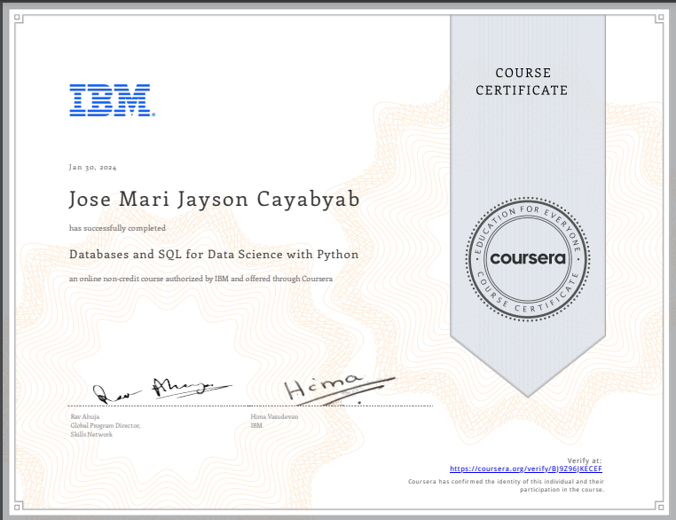

TECH BACKGROUND
I’ve been hands-on with technology from a young age, starting with my first computer at age 7.
I often played games on devices that weren’t top-of-the-line, which taught me how to adjust and
fine-tune them to work better. Through this, I’ve gained a solid understanding of basic computer
fixes and how to get around a PC’s settings and programs.
Fast forward to today, and I am now exploring career opportunities in the tech industry.
I’ve taken online courses from Coursera and Harvard’s CS50 and watched countless tech videos.
These steps have built a solid foundation in computer science and set me on the path to turning
my passion into a profession.